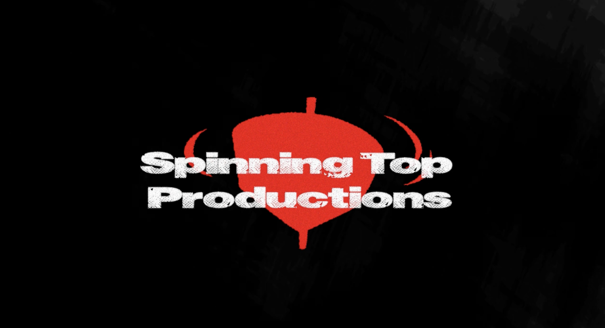

Spinning Top Productions Bumper

The Spinning Top Productions Bumpers are a batch of six short motion graphics videos built around a stylized metallic spinning top. Spinning Top Productions is a made-up name, and the series shows my ability to conceptualize and bring a visual identity to life. Each bumper works as a title sequence and brand identifier, pairing clean typography with the top's sleek metallic reflections.
I combined fluid simulations and textured backdrops, mixing digital techniques with organic textures. The fluid motion and reflective surfaces carry through all six variations, so the set reads as one brand while each piece stays distinct.